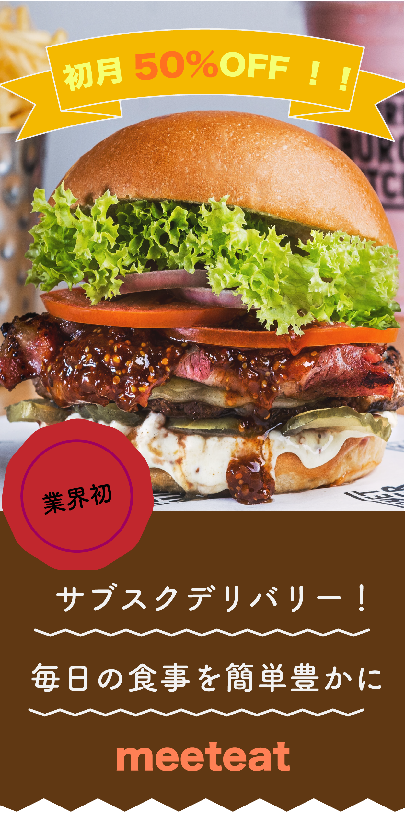

Banners
01. 求人検索バナー
- 概要
- 求人検索バナー
- サイズ
- 336×280px
- 制作
ポイント - ターゲットは、在宅の仕事を探している女性。活気のあるオレンジと心が安らぐグリーンカラーを使用することで、ストレスが溜まりがちな転職活動中にノンストレスで気軽にバナーをタップできるように作成した。 ボタンを浮かせることで、ついクリックしたくなるようデザインし、文言も「仕事を探す」ではなく、「仕事が見つかる！」とすることで、この求人サイトを利用すると転職にゴールが見えるという自信を明示した。
- 制作期間
- 1時間
02. 航空会社バナー

- 概要
- 航空会社販促バナー
- サイズ
- 300×250px
- 制作
ポイント - ターゲットは、自粛期間中旅行を制限していた男女。飛行機の利用を制限していたお客様に対してのカムバックと割引きを伝えるバナーとして制作。 あえて青空の写真は使わず、明け方の空を使用することで、航空会社もお客様も待ちに待った旅行であることを表した。
- 制作期間
- 1時間
03. サブスクデリバリーバナー

- 概要
- サブスクデリバリー販促バナー
- サイズ
- 300×600px
- 制作
ポイント - ターゲットは、在宅勤務をしている社会人。在宅勤務などで、ランチのレパートリーに悩む人のために定額制で好きな時間にデリバリーを頼めるサービスの販促。 インパクトのあるハンバーガーの画像を使用することでユーザの目を引き、初月50%OFFと明示することで、新規顧客を開拓する。
- 制作期間
- 1時間
04. warabee!ロゴ
- 概要
- warabee!サイト用のロゴ
- 制作
ポイント - アウトドア専門店(架空)のロゴを作成。「クアッカワラビー×童(わらべ)×wanna be!(なりたい！)」をもじってwarabee!という店名となったので、 クアッカワラビーのイラストを起点として、子どものように楽しめるアウトドアをイメージして作成した。
- 制作期間
- 1時間